Resumen de figuras geométricas planas
Resumen de figuras geométricas planas
- Polígonos
- Polígonos regulares
- Polígono inscrito
- Triángulos
- Circunferencias y círculos
- Polígonos estrellados
Polígonos
Un polígono es la región del plano limitada por tres o más segmentos.
Elementos de un polígono:
1 Lados: Son los segmentos que lo limitan.
2 Vértices: Son los puntos donde concurren dos lados.
3 Ángulos interiores de un polígono: Son los determinados por dos lados consecutivos.
4 Diagonal: Son los segmentos que determinan dos vértices no consecutivos
Número de diagonales de un polígono:
Si n es el número de lados de un polígono::
Polígonos regulares
Un polígono regular es el que tiene sus ángulos iguales y sus lados iguales.
Elementos de un polígono regular

1 Centro: Punto interior que equidista de cada vértice.
2 Radio: Es el segmento que va del centro a cada vértice.
3 Apotema: Distancia del centro al punto medio de un lado.
Ángulos de un polígono regular
Es el formado por dos radios consecutivos.
Si n es el número de lados de un polígono:
Ángulo central = 360° : n
Ángulo interior = (n - 2) · 180° : n
Polígono inscrito
Un polígono está inscrito en una circunferencia si todos sus vértices están contenidos en ella.
1 Circunferencia circunscrita
Es la que toca a cada vértice del polígono.
Su centro equidista de todos los vértices.
Su radio es el radio del polígono.
2 Circunferencia inscrita
Es la que toca al polígono en el punto medio de cada lado.
Su centro equidista de todos los lados.
Su radio es la apotema del polígono.
Triángulos
Un triángulo es un polígono con tres lados.
Propiedades de los triángulos
1 Un lado de un triángulo es menor que la suma de los otros dos y mayor que su diferencia.
2 La suma de los ángulos interiores de un triángulo es igual a 180°.
3 El valor de un ángulo exterior es igual a la suma de los dos interiores no adyacentes.
Tipos de triángulos
1 Según sus lados:
Triángulo equilátero
Tres lados iguales.

Triángulo isósceles
Dos lados iguales.

Triángulo escaleno
Tres lados desiguales.

2 Según sus ángulos:
Triángulo acutángulo
Tres ángulos agudos

Triángulo rectángulo
Un ángulo recto. El lado mayor es la hipotenusa. Los lados menores son los catetos.

Triángulo obtusángulo
Un ángulo obtuso.
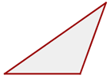Alturas de un triángulo
Altura es cada una de las rectas perpendiculares trazadas desde un vértice al lado opuesto (o su prolongación).
Ortocentro
Es el punto de corte de las tres alturas.

Medianas de un triángulo
Mediana es cada una de las rectas que une el punto medio de un lado con el vértice opuesto.
Baricentro

Es el punto de corte de las tres medianas.
El baricentro divide a cada mediana en dos segmentos, el segmento que une el baricentro con el vértice mide el doble que el segmento que une baricentro con el punto medio del lado opuesto.
Mediatrices de un triángulo
Mediatriz es cada una de las rectas perpendiculares trazadas a un lado por su punto medio.
Circuncentro
Es el punto de corte de las tres mediatrices.
Es el centro de una circunferencia circunscrita al triángulo.
Bisectrices de un triángulo
Bisectriz es cada una de las rectas que divide a un ángulo en dos ángulos iguales.
Incentro
Es el punto de corte de las tres bisetrices.
Es el centro de una circunferencia inscrita en el triángulo.
Recta de Euler
El ortocentro, el baricentro y el circuncentro de un triángulo no equilátero están alineados; es decir, pertenecen a la misma recta, llamada recta de Euler.
Teorema del cateto
En todo triángulo rectángulo un cateto es media proporcional entre la hipotenusa y su proyección sobre ella.

Teorema de la altura
En un triángulo rectángulo, la altura relativa a la hipotenusa es media proporcional entre los 2 segmentos que dividen a ésta.
Teorema de Pitágoras

En un triángulo rectángulo, el cuadrado de la hipotenusa es igual a la suma de los cuadrados de los catetos.

Circunferencia y círculo
1Circunferencia
Una circunferencia es una línea curva cerrada cuyos puntos están todos a la misma distancia de un punto fijo llamado centro. 
Centro de la circunferencia: Punto del que equidistan todos los puntos de la circunferencia.
Radio de la circunferencia: Segmento que une el centro de la circunferencia con un punto cualquiera de la misma.
Elementos de la circunferencia
Cuerda
Segmento que une dos puntos de la circunferencia.
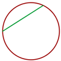Diámetro
Cuerda que pasa por el centro.

Arco
Cada una de las partes en que una cuerda divide a la circunferencia. Se suele asociar a cada cuerda el menor arco que delimita.

Semicircunferencia
Cada uno de los arcos iguales que abarca un diámetro.

2 Círculo
Es la figura plana comprendida en el interior de una circunferencia.
Elementos de un círculo
Segmento circular
Porción de círculo limitada por una cuerda y el arco correspondiente.

Semicírculo
Porción del círculo limitada por un diámetro y el arco correspondiente. Equivale a la mitad del círculo.
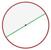Zona circular
Porción de círculo limitada por dos cuerdas.

Sector circular
Porción de círculo limitada por dos radios.

Corona circular
Porción de círculo limitada por dos círculos concéntricos.

Trapecio circular
Porción de círculo limitada por dos radios y una corona circular.

Ángulos en la circunferencia
1 Ángulo central
El ángulo central tiene su vértice en el centro de la circunferencia y sus lados son dos radios.
La medida de un arco es la de su ángulo central correspondiente.
2 Ángulo inscrito
El ángulo inscrito tiene su vértice está en la circunferencia y sus lados son secantes a ella.
Mide la mitad del arco que abarca.

3 Ángulo semi-inscrito

El vértice de ángulo semiinscrito está en la circunferencia, un lado secante y el otro tangente a ella.
Mide la mitad del arco que abarca.

4 Ángulo interior

Su vértice es interior a la circunferencia y sus lados secantes a ella.
Mide la mitad de la suma de las medidas de los arcos que abarcan sus lados y las prolongaciones de sus lados.

5 Ángulo exterior
Su vértice es un punto exterior a la circunferencia y los lados de sus ángulos son: o secantes a ella, o uno tangente y otro secante, o tangentes a ella:


Su vértice es un punto exterior a la circunferencia y los lados de sus ángulos son: o secantes a ella, o uno tangente y otro secante, o tangentes a ella:

Longitud de una circunferencia
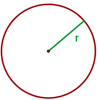Longitud de un arco de circunferencia

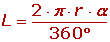
Área de un círculo

Área de un sector circular
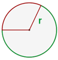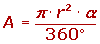
Área de una corona circular

Es igual al área del círculo mayor menos el área del círculo menor.
Área de un trapecio circular
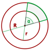Es igual al área del sector circular mayor menos el área del sector circular menor.
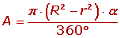Área de un segmento circular
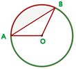Área del segmento circular AB = Área del sector circular AOB − Área del triángulo AOB
Polígonos estrellados
Un polígono regular estrellado se construye uniendo los vértices no consecutivos, de un polígono regular convexo, de forma continua.
Se denotan por N/M, siendo N el número de vértices del polígono regular convexo y M el salto entre vértices.
N/M ha de ser fracción irreducible.
El polígono N/M es el mismo que el N/(N-M), ya que el polígono estrellado que se obtiene uniendo vértices en un sentido y en el contrario es el mismo.
Perímetro de un polígono: Es la suma de las longitudes de los lados de un polígono.
Área: Es la medida de la región o superficie encerrada por una figura plana
1 Área de un cuadrado:
2 Área de un rectángulo:

3 Área de un rombo:
4 Área de un romboide:

P = 2 · (a + b)
A = b · h
5 Área de un trapecio:

6 Área de un triángulo:

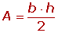
7 Área de un polígono:
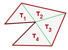El área se obtiene triangulando el polígono y sumando el área de dichos triángulos.
8 Área de un polígono regular:

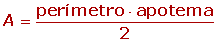